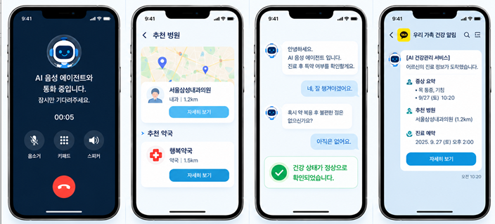

"앱 설치도, 본인인증도 없이
전화 한 통으로 아픈 곳을 말씀하세요"
Vapi AI 음성 에이전트가 어르신의 말씀에서 증상을 정확히 파악하고,
노인 친화적 병원·약국 추천부터 자녀를 위한 카카오톡 안심 리포트, 사후 복약 안부콜까지 원스톱으로 이어줍니다.
실버케어 AI 간호 에이전트
"어르신, 어디가 어떻게 불편하신가요?"
왜 노년층에게 '음성 전용 의료 AI'가 필요할까요?
질병관리청 백신 접종 데이터와 노인 복지 실태 분석에서 발견한 디지털 의료 격차의 심각성을 해결합니다.
연령별 백신 접종률 및 디지털 예약 접근성 비교
대한민국 질병관리청 발표 데이터 기반80세 이상의 접종률이 청장년층보다 현저히 낮습니다. 이는 정보 부족이 아닌 '스마트폰 앱 설치', '복잡한 본인인증', '작은 글씨'로 인한 진입 장벽 때문입니다.
복잡한 디지털 본인인증의 벽
간편인증, 공인인증서, 휴대폰 문자 본인확인은 어르신들이 가장 먼저 포기하게 되는 높은 문턱입니다.
어르신 상태에 맞는 의료기관 탐색 곤란
단순 진료과 뿐만 아니라 엘리베이터 여부, 휠체어 경사로, 대기 시간 등 노년층 맞춤형 병원 정보가 부재합니다.
멀리 사는 자녀의 불안감 & 독거노인 사각지대
부모님이 병원에 잘 다녀오셨는지, 처방 약은 챙겨드셨는지 실시간으로 확인하기 어렵고 독거노인은 대리인이 없습니다.
실버케어 AI 4단계 통합 케어 프로세스
Vapi 음성 에이전트와 Flask 서버, 카카오톡 알림톡, 사후 복약 확인까지 하나로 연결됩니다.
전화 음성 상담
Vapi Voice Agent앱 설치 없이 전화 통화로 증상을 말하면 Vapi가 고품질 음성 인식(STT)과 자연어 이해로 아픈 부위와 증상을 파악합니다.
AI 증상 분석 & 병원 매칭
Flask Server & Function ToolVapi Function Tool을 통해 Flask 서버로 데이터 전달. 공공 병원·약국 API와 연계하여 최적의 노인 친화적 병원을 매칭합니다.
보호자 안심 알림톡
KakaoTalk Notification부모님의 상담 요약, 추천 병원, 통화 요약본을 자녀(보호자)에게 카톡 전송. 독거노인은 생활지원사·간호사 대리인에게 전달됩니다.
사후 복약 안부콜
Follow-up Voice Call진료 후 AI 에이전트가 다시 전화를 걸어 처방약 복용 여부와 통증 호전도를 확인하고 경과를 모니터링합니다.
실버케어 AI 음성 에이전트 모의 통화
실제 Vapi 연동 환경과 동일하게 동작합니다. 마이크로 직접 말씀하시거나, 어르신 대표 증상 시나리오를 눌러보세요.
실버케어 AI 안심 간호사
어르신 대표 질환 시나리오 빠른 체험
누르시면 어르신의 음성 통화 상황이 즉시 시뮬레이션됩니다.
실시간 AI 분석 & Function Tool 호출 결과
대기 중증상 맞춤형 노인 친화 병원·약국 추천
Vapi Function Tool이 Flask 서버의 공공보건의료 API를 호출하여, 어르신이 걷기 편한 맞춤 병원을 자동 정렬합니다.
승강기(엘리베이터) 유무, 휠체어 진입 경사로, 노인 우선 접수 창구, 실시간 대기 인원 현황을 종합 분석하여 어르신 맞춤 순위로 추천합니다.
보호자 안심 카카오톡 알림톡 & 통합 리포트
부모님의 통화 내용 요약, AI 의심 질환, 추천 병원, 복약 상태가 자녀의 카카오톡으로 실시간 전달됩니다.
누적 건강 데이터 및 복약 히스토리
병원 방문 이력, 처방받은 약의 종류, 일자별 통증 호전도를 AI가 자동으로 기록하여 다음 진료 시 의료진에게 제공합니다.
독거노인·고령 1인 가구를 위한 지역사회 안전망 연계
보호자가 없거나 연락이 닿지 않는 어르신의 경우, 생활지원사, 방문간호사, 마을 이장 및 읍면동 복지센터로 자동 연결되어 의료 복지 사각지대를 해소합니다.
보호자 원클릭 예약 & 택시/동행 서비스
거동이 불편한 어르신을 위해 보호자가 알림톡 화면에서 원클릭으로 이동 지원 및 진료 예약을 대리 접수할 수 있습니다.
진료 후 사후 관리: AI 복약 안부콜
진료가 끝난 후에도 끝이 아닙니다. Vapi 에이전트가 지정된 시간에 전화를 걸어 약 복용 여부와 불편 사항을 점검합니다.
"어르신, 처방받은 약은 식후에 잘 드셨나요?"
1. 정시 자동 발신
처방전 복약 시간에 맞춰 Vapi AI가 어르신께 친근한 목소리로 자동 전화를 발신합니다.
2. 음성 대화 확인
"약 드시고 속이 쓰리진 않으신가요? 무릎 아픈 건 좀 덜해지셨어요?" 자연어로 대화합니다.
3. 이상 징후 감지
부작용이나 통증 지속 시 담당 병원 간호사 및 보호자에게 긴급 알림을 즉시 발송합니다.
2026년 울산 AI 해커톤 참가 계획서 개요
한글 계획서(2026해커톤 참가신청서 킴범주팀)에 수록된 아이디어와 구현 아키텍처를 소개합니다.
End-to-End 서비스 구성도
